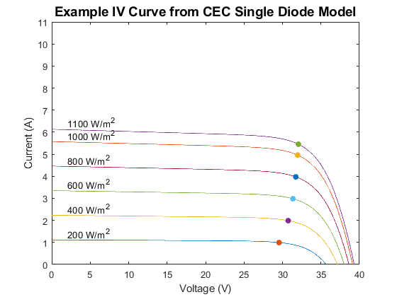
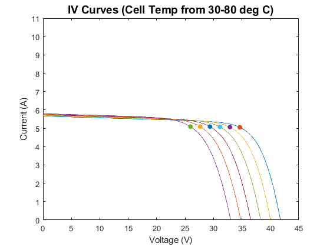

pvl_calcparams_CEC
Calculates five parameters for an IV curve using the CEC model.
Contents
Syntax
- [IL, I0, Rs, Rsh, nNsVth] = pvl_calcparams_CEC(S, Tcell, ModuleParameters)
Description
Applies the temperature and irradiance corrections to calculate the five parameters for an IV curve according to the CEC model [1]. The results of this procedure may be used to determine the IV curve at effective irradiance = S, cell temperature = Tcell.
Inputs
- S - The effective irradiance (in W/m^2). S must be >= 0. May be a vector, but must be the same size as Tcell. Due to a division by S in the script, any value equal to 0 will be set to 1E-10.
- Tcell - The average cell temperature of cells within a module in C. Tcell must be >= -273.15. May be a vector, but must be the same size as all other input vectors.
- ModuleParameters - a struct with parameters for the module. A library of module parameters from the System Advisor Model (SAM) [2] is provided with PV_LIB (\Required Data\CECModuleDatabaseSAM2014.1.14.mat), which may be read by the SAM library reader function pvl_SAMLibraryReader_CECModules. The ModuleParameters struct must contain (at least) the following fields:
- ModuleParameters.a_ref - modified diode ideality factor at reference conditions (units of V), a_ref is calculated as a_ref = n Ns Vth, where n is the usual diode ideality factor (n), Ns is the number of cells in series, and Vth is the thermal voltage at STC cell temperature 298.15K.
- ModuleParameters.IL_ref - Light-generated current (or photocurrent) in amperes at reference conditions.
- ModuleParameters.I0_ref - diode reverse saturation current in amperes, at reference conditions.
- ModuleParameters.Rsh_ref - shunt resistance at reference conditions (ohms)
- ModuleParameters.Rs_ref - series resistance at reference conditions (ohms)
- ModuleParameters.alpha_sc - temperature coefficient for short-circuit current at reference conditions (A/C)
- ModuleParameters.adjust - an adjustment factor (percent) applied to the reference value for the temperature coefficient for short circuit current
Outputs
- IL - Light-generated current in amperes
- I0 - Diode saturation curent in amperes
- Rs - Series resistance in ohms
- Rsh - Shunt resistance in ohms
- nNsVth - nNsVth is the product of the usual diode ideality factor (n), the number of series-connected cells in the module (Ns), and the thermal voltage of a cell in the module (Vth) at a cell temperature of Tcell. Note that in [1] nNsVth = a.
Notes
In the case of the CEC model and the parameters in the System Advisor Model library, created as described in [3], EgRef and dEgdT for all modules are 1.121 and -0.0002677, respectively.
Example 1
IV curves at a range of irradiance values
Ee = [200 400 600 800 1000 1100]; % effective irradiance Levels (W/m^2) for parameter sets Tcell = 45; %deg C load('CECModuleDatabaseSAM2014.1.14.mat') % Yingli Energy (China) YL295P-35b # 9764 Module = CECModuleDB(9764); [IL, I0, Rs, Rsh, a] = pvl_calcparams_CEC(Ee, Tcell, Module); NumPoints = 1000; [IVResult] = pvl_singlediode(IL, I0, Rs, Rsh, a, NumPoints); figure for i=1:6 plot(IVResult.V(i,:),IVResult.I(i,:)) hold on scatter(IVResult.Vmp(i),IVResult.Imp(i),'filled') text(2,IVResult.Isc(i)+0.3,[num2str(Ee(i)) ' W/m^2']) end xlabel('Voltage (V)') ylabel('Current (A)') title('Example IV Curve from CEC Single Diode Model','FontSize',14) ylim([0 11])
Example 2
IV curves at a range of cell temperature values and at AM = 3
S = 1000; %broadband irradiance Levels for parameter sets Tcell = [30 40 50 60 70 80]; %deg C AMa = 3; % Absolute (pressure corrected) airmass % Representative coefficients for estimating M/Mref for Poly-crystalline Si % From Eq. 9.23 in [1]. M = polyval([-0.000126 0.002816 -0.024459 0.086257 0.918093], AMa); Ee = S.*M; [IL, I0, Rs, Rsh, a] = pvl_calcparams_CEC(Ee, Tcell, Module); NumPoints = 1000; [IVResult] = pvl_singlediode(IL, I0, Rs, Rsh, a, NumPoints); figure for i=1:6 plot(IVResult.V(i,:),IVResult.I(i,:)) hold on scatter(IVResult.Vmp(i),IVResult.Imp(i),'filled') end xlabel('Voltage (V)') ylabel('Current (A)') title('IV Curves (Cell Temp from 30-80 deg C)','FontSize',14) ylim([0 11])
References:
[1] P. Gilman, SAM Photovoltaic Model Technical Reference, National Renewable Energy Laboratory (NREL) Technical Report NREL/TP-6A20-64102, May 2015.
[2] A. Dobos, "An Improved Coefficient Calculator for the California Energy Commission 6 Parameter Photovoltaic Module Model", Journal of Solar Energy Engineering, vol 134, 2012.
See also
pvl_singlediode, pvl_SAMLibraryReader_CECModules
Copyright 2015 Sandia National Laboratories